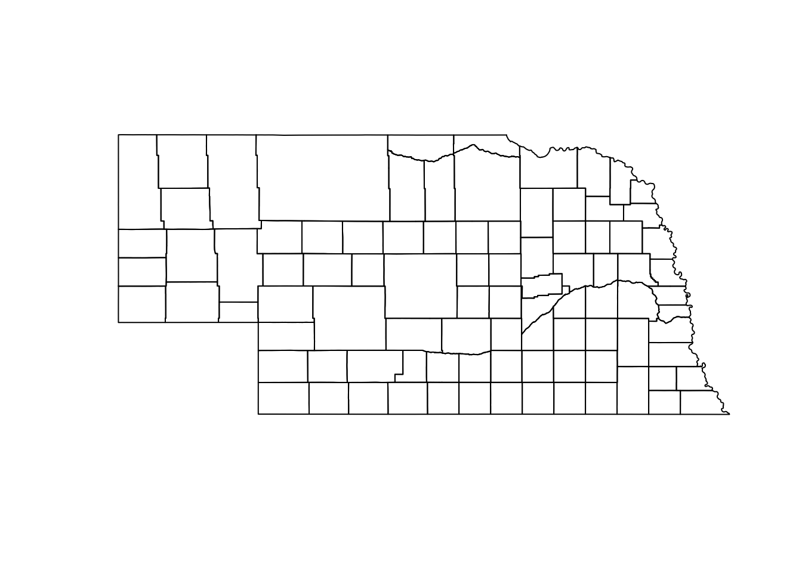
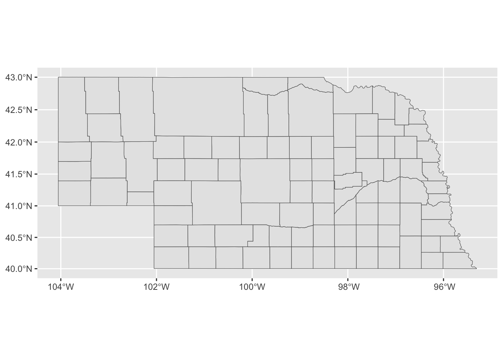
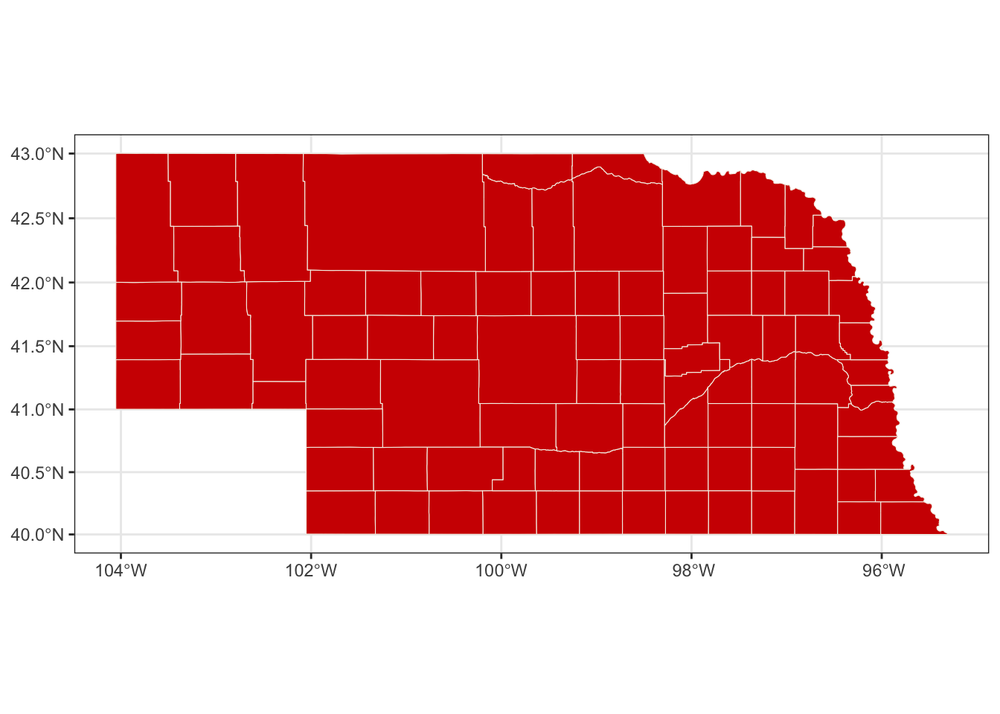
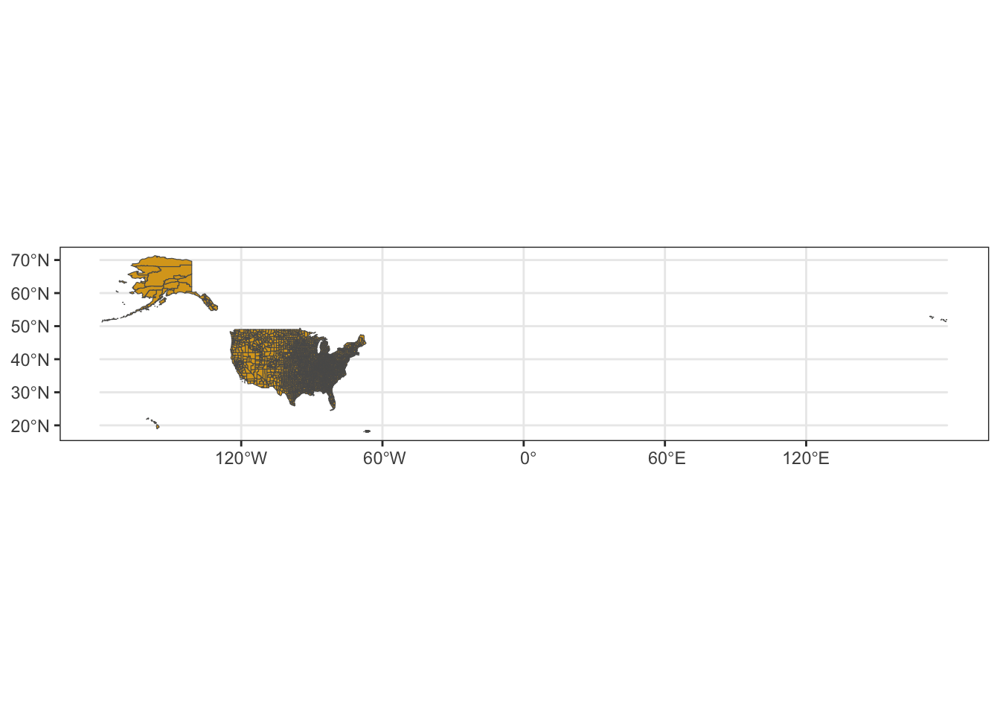
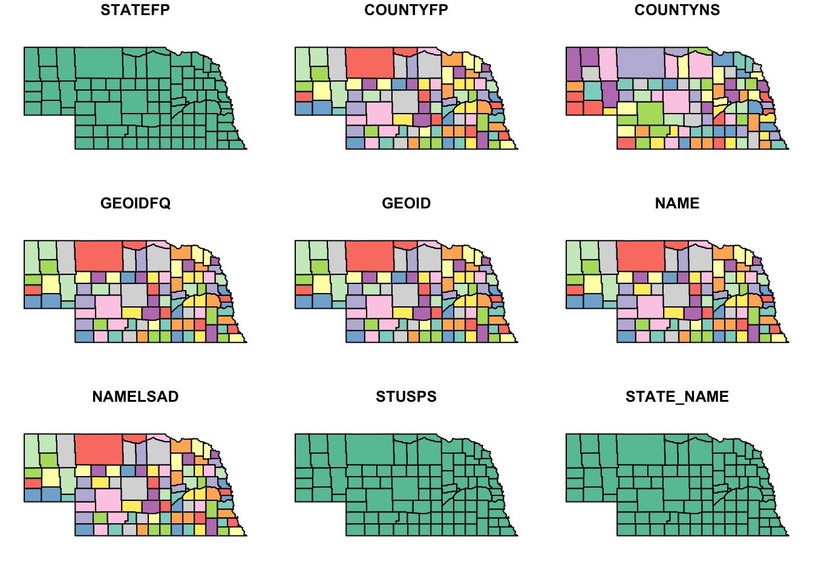
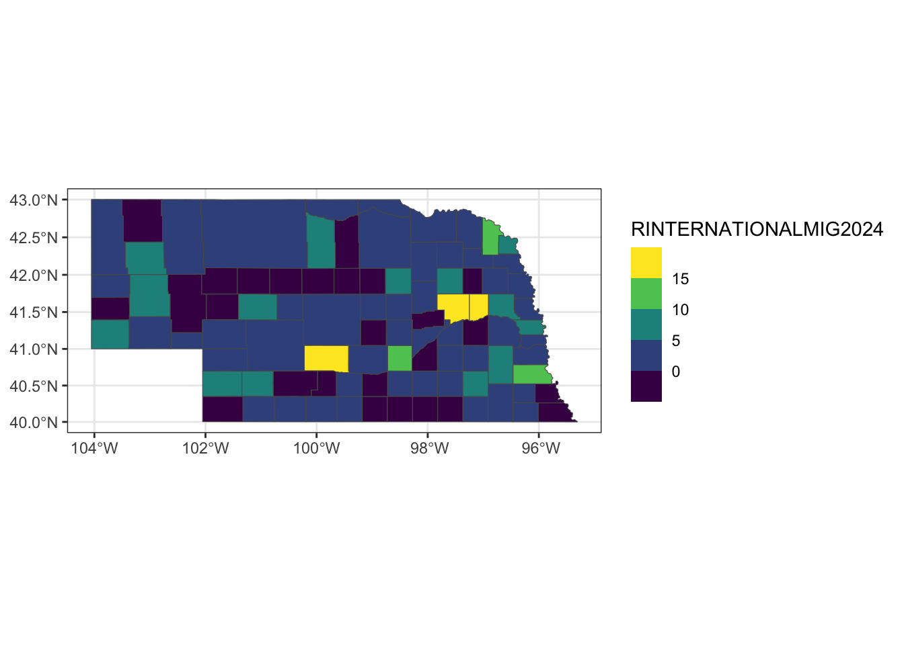
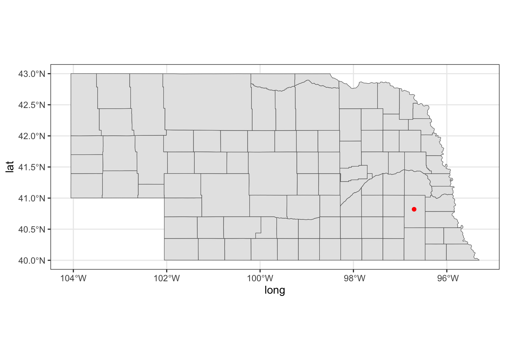
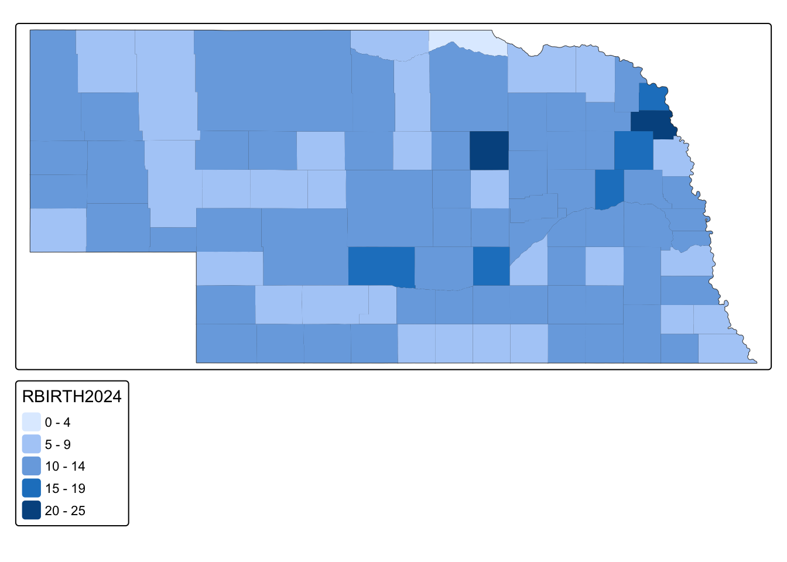

Mini-Module: Making Maps
Dai Shizuka
updated 11/11/25
This is a very quick intro to several ways to make maps in R.
Please note that I am not an expert in cartography or spatial statistics! There are probably better tutorials out there for this.
1. Plot directly from shapefile
Using sf package to plot a map using a shapefile that you downloaded from somewhere.
Load packages:
library(tidyverse)
library(sf)
library(tmap)
library(tigris)Download shapefile & plot: Nebraska example
Shapefiles for countries, states, counties, etc. are often available on respective agency websites.
For example, I can download the Nebraska county boundaries shapefile from here: https://www.nebraskamap.gov/datasets/county-boundaries-2/explore

Click on “download” and select “Shapefile”. Uncompress the .zip file and move the whole folder to your data folder.
IMPORTANT: When you download a shapefile, you will be downloading a whole folder (or .zip file containing a whole folder) that includes both the .shp file and several other supplemental files. You need to keep all of these together!
So your .shp file should be saved within a subfolder in your data folder that looks like this:

Now you can import the shapefile using st_read()
function.
ne_shp=st_read("data/NE_County_Boundaries/County_Boundaries.shp")## Reading layer `County_Boundaries' from data source
## `/Users/dshizuka2/Documents/GitHub/RCourse/data/NE_County_Boundaries/County_Boundaries.shp'
## using driver `ESRI Shapefile'
## Simple feature collection with 93 features and 7 fields
## Geometry type: POLYGON
## Dimension: XY
## Bounding box: xmin: -11583190 ymin: 4865930 xmax: -10609650 ymax: 5312216
## Projected CRS: WGS 84 / Pseudo-MercatorYou can see what information is in this dataset using
str()
str(ne_shp)## Classes 'sf' and 'data.frame': 93 obs. of 8 variables:
## $ OBJECTID : int 1 2 3 4 5 6 7 8 9 10 ...
## $ Cnty_Name : chr "Adams" "Antelope" "Arthur" "Banner" ...
## $ Cnty_No : int 1 2 3 4 5 6 7 8 9 10 ...
## $ CountyFIPS: chr "001" "003" "005" "007" ...
## $ GlobalID : chr "{16352331-3262-4EBB-A789-263D6FDBEBB3}" "{FA9D8609-F002-4003-AF46-CE1F04A2B936}" "{FF27D2CA-CA67-4D69-8720-0EF86DB743E5}" "{85111E3B-7990-4C93-A22A-5941EBEC0EBF}" ...
## $ Shape_Leng: num 201309 260687 232241 242686 232721 ...
## $ Shape_Area: num 2.53e+09 4.05e+09 3.33e+09 3.45e+09 3.34e+09 ...
## $ geometry :sfc_POLYGON of length 93; first list element: List of 1
## ..$ : num [1:102, 1:2] -10940269 -10940274 -10940278 -10940281 -10940284 ...
## ..- attr(*, "class")= chr [1:3] "XY" "POLYGON" "sfg"
## - attr(*, "sf_column")= chr "geometry"
## - attr(*, "agr")= Factor w/ 3 levels "constant","aggregate",..: NA NA NA NA NA NA NA
## ..- attr(*, "names")= chr [1:7] "OBJECTID" "Cnty_Name" "Cnty_No" "CountyFIPS" ...plot() in sf
You can use the plot() function on an sf object.
If you just use that function, it will plot different maps with all variables that are in the file.
plot(ne_shp)
If you want to plot the map with one variable, you can use
[] and indicate which variable you want to plot.
plot(ne_shp["Shape_Area"])
If you want to just plot the shapes, you can use
st_geometry()
plot(st_geometry(ne_shp))
Use ggplot
And it’s pretty simple to plot that using the geom_sf()
function:
ggplot() +
geom_sf(data=ne_shp) 
Let’s color the state with the Husker colors (colors according to the university brand guide).
ggplot() +
geom_sf(data=ne_shp, fill="#d00000", color="#f5f1e7") +
theme_bw()
Download shapefile & plot: U.S. example
I downloaded the 2018 US county data from US census bureau: https://www.census.gov/geographies/mapping-files/time-series/geo/carto-boundary-file.html
Again, remember to save the entire folder that you downloaded into your data folder.
Import the .shp file into R:
us_shp=st_read("data/cb_2018_us_county_20m/cb_2018_us_county_20m.shp")## Reading layer `cb_2018_us_county_20m' from data source
## `/Users/dshizuka2/Documents/GitHub/RCourse/data/cb_2018_us_county_20m/cb_2018_us_county_20m.shp'
## using driver `ESRI Shapefile'
## Simple feature collection with 3220 features and 9 fields
## Geometry type: MULTIPOLYGON
## Dimension: XY
## Bounding box: xmin: -179.1743 ymin: 17.91377 xmax: 179.7739 ymax: 71.35256
## Geodetic CRS: NAD83Let’s try plotting this:
ggplot() +
geom_sf(data=us_shp, fill="goldenrod") +
theme_bw()
You can see that this looks funky because part of the Aleutian Islands crosses the international date line, and it appears on the right-hand side of the map.
There are number of ways to deal with this, but they all seem complicated. Let’s just do a quick fix and restrict the x-axis limits:
ggplot() +
geom_sf(data=us_shp, fill="goldenrod") +
coord_sf(xlim=c(-180,-50)) +
theme_bw()
2. Use tigris package to directly download shapefiles
You can use the tigris package to download shapefile data from the U.S. Census Bureau directly.
Here is a tutorial for using this package: https://walker-data.com/census-r/census-geographic-data-and-applications-in-r.html
For example, let’s download the county data for Nebraska:
ne_tig=counties("Nebraska", cb=TRUE)## | | | 0% | | | 1% | |= | 1% | |= | 2% | |== | 2% | |== | 3% | |== | 4% | |=== | 4% | |=== | 5% | |==== | 5% | |==== | 6% | |===== | 6% | |===== | 7% | |===== | 8% | |====== | 8% | |====== | 9% | |======= | 9% | |======= | 10% | |======= | 11% | |======== | 11% | |======== | 12% | |========= | 12% | |========= | 13% | |========= | 14% | |========== | 14% | |========== | 15% | |=========== | 15% | |=========== | 16% | |============ | 16% | |============ | 17% | |============ | 18% | |============= | 18% | |============= | 19% | |============== | 19% | |============== | 20% | |============== | 21% | |=============== | 21% | |=============== | 22% | |================ | 22% | |================ | 23% | |================ | 24% | |================= | 24% | |================= | 25% | |================== | 25% | |================== | 26% | |=================== | 26% | |=================== | 27% | |=================== | 28% | |==================== | 28% | |==================== | 29% | |===================== | 29% | |===================== | 30% | |===================== | 31% | |====================== | 31% | |====================== | 32% | |======================= | 32% | |======================= | 33% | |======================= | 34% | |======================== | 34% | |======================== | 35% | |========================= | 35% | |========================= | 36% | |========================== | 36% | |========================== | 37% | |========================== | 38% | |=========================== | 38% | |=========================== | 39% | |============================ | 39% | |============================ | 40% | |============================ | 41% | |============================= | 41% | |============================= | 42% | |============================== | 42% | |============================== | 43% | |============================== | 44% | |=============================== | 44% | |=============================== | 45% | |================================ | 45% | |================================ | 46% | |================================= | 46% | |================================= | 47% | |================================= | 48% | |================================== | 48% | |================================== | 49% | |=================================== | 49% | |=================================== | 50% | |=================================== | 51% | |==================================== | 51% | |==================================== | 52% | |===================================== | 52% | |===================================== | 53% | |===================================== | 54% | |====================================== | 54% | |====================================== | 55% | |======================================= | 55% | |======================================= | 56% | |======================================== | 56% | |======================================== | 57% | |======================================== | 58% | |========================================= | 58% | |========================================= | 59% | |========================================== | 59% | |========================================== | 60% | |========================================== | 61% | |=========================================== | 61% | |=========================================== | 62% | |============================================ | 62% | |============================================ | 63% | |============================================ | 64% | |============================================= | 64% | |============================================= | 65% | |============================================== | 65% | |============================================== | 66% | |=============================================== | 67% | |=============================================== | 68% | |================================================ | 68% | |================================================ | 69% | |================================================= | 69% | |================================================= | 70% | |================================================= | 71% | |================================================== | 71% | |================================================== | 72% | |=================================================== | 72% | |=================================================== | 73% | |=================================================== | 74% | |==================================================== | 74% | |==================================================== | 75% | |===================================================== | 75% | |===================================================== | 76% | |====================================================== | 77% | |====================================================== | 78% | |======================================================= | 78% | |======================================================= | 79% | |======================================================== | 79% | |======================================================== | 80% | |======================================================== | 81% | |========================================================= | 81% | |========================================================= | 82% | |========================================================== | 82% | |========================================================== | 83% | |========================================================== | 84% | |=========================================================== | 84% | |=========================================================== | 85% | |============================================================ | 85% | |============================================================ | 86% | |============================================================= | 87% | |============================================================= | 88% | |============================================================== | 88% | |============================================================== | 89% | |=============================================================== | 89% | |=============================================================== | 90% | |=============================================================== | 91% | |================================================================ | 91% | |================================================================ | 92% | |================================================================= | 92% | |================================================================= | 93% | |================================================================= | 94% | |================================================================== | 94% | |================================================================== | 95% | |=================================================================== | 95% | |=================================================================== | 96% | |==================================================================== | 97% | |==================================================================== | 98% | |===================================================================== | 98% | |===================================================================== | 99% | |======================================================================| 99% | |======================================================================| 100%Here is what that data looks like
tibble(ne_tig)## # A tibble: 93 × 13
## STATEFP COUNTYFP COUNTYNS GEOIDFQ GEOID NAME NAMELSAD STUSPS STATE_NAME
## <chr> <chr> <chr> <chr> <chr> <chr> <chr> <chr> <chr>
## 1 31 115 00835879 0500000US31… 31115 Loup Loup Co… NE Nebraska
## 2 31 005 00835825 0500000US31… 31005 Arth… Arthur … NE Nebraska
## 3 31 075 00835859 0500000US31… 31075 Grant Grant C… NE Nebraska
## 4 31 091 00835867 0500000US31… 31091 Hook… Hooker … NE Nebraska
## 5 31 185 00835914 0500000US31… 31185 York York Co… NE Nebraska
## 6 31 093 00835868 0500000US31… 31093 Howa… Howard … NE Nebraska
## 7 31 113 00835878 0500000US31… 31113 Logan Logan C… NE Nebraska
## 8 31 103 00835873 0500000US31… 31103 Keya… Keya Pa… NE Nebraska
## 9 31 077 00835860 0500000US31… 31077 Gree… Greeley… NE Nebraska
## 10 31 171 00835907 0500000US31… 31171 Thom… Thomas … NE Nebraska
## # ℹ 83 more rows
## # ℹ 4 more variables: LSAD <chr>, ALAND <dbl>, AWATER <dbl>,
## # geometry <MULTIPOLYGON [°]>Again, you can plot this just the same way as an imported shapefile.
plot(ne_tig)## Warning: plotting the first 9 out of 12 attributes; use max.plot = 12 to plot
## all
3. Layering information on the map
Now let’s add more interesting information on the map. We can do this if we have a dataset that contains information at the same scale as our shapefile–i.e., if we have a shapefile that shows the county boundaries, we can add information at the county level and then display the map with that information.
Here, I’m going to use county-level data that I download from the U.S. Census Bureau. (at the bottom of this page)
Here is the direct link to the data
“Annual County Resident Population Estimates by Age, Sex, Race, and Hispanic Origin: April 1, 2020 to July 1, 2024 (CC-EST2024-ALLDATA)” –> select “Nebraska”
Read the county-level data.
co_data=read.csv("data/co-est2024-alldata.csv")
tibble(co_data)## # A tibble: 3,195 × 83
## SUMLEV REGION DIVISION STATE COUNTY STNAME CTYNAME ESTIMATESBASE2020
## <int> <int> <int> <int> <int> <chr> <chr> <int>
## 1 40 3 6 1 0 Alabama Alabama 5025369
## 2 50 3 6 1 1 Alabama Autauga County 58800
## 3 50 3 6 1 3 Alabama Baldwin County 231767
## 4 50 3 6 1 5 Alabama Barbour County 25226
## 5 50 3 6 1 7 Alabama Bibb County 22284
## 6 50 3 6 1 9 Alabama Blount County 59130
## 7 50 3 6 1 11 Alabama Bullock County 10355
## 8 50 3 6 1 13 Alabama Butler County 19048
## 9 50 3 6 1 15 Alabama Calhoun County 116437
## 10 50 3 6 1 17 Alabama Chambers County 34692
## # ℹ 3,185 more rows
## # ℹ 75 more variables: POPESTIMATE2020 <int>, POPESTIMATE2021 <int>,
## # POPESTIMATE2022 <int>, POPESTIMATE2023 <int>, POPESTIMATE2024 <int>,
## # NPOPCHG2020 <int>, NPOPCHG2021 <int>, NPOPCHG2022 <int>, NPOPCHG2023 <int>,
## # NPOPCHG2024 <int>, BIRTHS2020 <int>, BIRTHS2021 <int>, BIRTHS2022 <int>,
## # BIRTHS2023 <int>, BIRTHS2024 <int>, DEATHS2020 <int>, DEATHS2021 <int>,
## # DEATHS2022 <int>, DEATHS2023 <int>, DEATHS2024 <int>, …Mapping county data on map of Nebraska
ne_full2024=ne_shp %>% mutate(CountyFIPS=as.numeric(CountyFIPS)) %>% left_join(co_data %>% filter(STNAME=="Nebraska"), by=join_by("CountyFIPS"=="COUNTY"))tibble(ne_full2024)## # A tibble: 93 × 90
## OBJECTID Cnty_Name Cnty_No CountyFIPS GlobalID Shape_Leng Shape_Area SUMLEV
## <int> <chr> <int> <dbl> <chr> <dbl> <dbl> <int>
## 1 1 Adams 1 1 {16352331… 201309. 2.53e9 50
## 2 2 Antelope 2 3 {FA9D8609… 260687. 4.05e9 50
## 3 3 Arthur 3 5 {FF27D2CA… 232241. 3.33e9 50
## 4 4 Banner 4 7 {85111E3B… 242686. 3.45e9 50
## 5 5 Blaine 5 9 {AA433830… 232721. 3.34e9 50
## 6 6 Boone 6 11 {7525569E… 233170. 3.20e9 50
## 7 7 Box Butte 7 13 {D6108A51… 295708. 5.10e9 50
## 8 8 Boyd 8 15 {133AFDC8… 283608. 2.63e9 50
## 9 9 Brown 9 17 {94BE7DBB… 342015. 5.83e9 50
## 10 10 Buffalo 10 19 {88742488… 270396. 4.40e9 50
## # ℹ 83 more rows
## # ℹ 82 more variables: REGION <int>, DIVISION <int>, STATE <int>, STNAME <chr>,
## # CTYNAME <chr>, ESTIMATESBASE2020 <int>, POPESTIMATE2020 <int>,
## # POPESTIMATE2021 <int>, POPESTIMATE2022 <int>, POPESTIMATE2023 <int>,
## # POPESTIMATE2024 <int>, NPOPCHG2020 <int>, NPOPCHG2021 <int>,
## # NPOPCHG2022 <int>, NPOPCHG2023 <int>, NPOPCHG2024 <int>, BIRTHS2020 <int>,
## # BIRTHS2021 <int>, BIRTHS2022 <int>, BIRTHS2023 <int>, BIRTHS2024 <int>, …plot(ne_full2024["POPESTIMATE2024"])
ggplot() +
geom_sf(data=ne_full2024, aes(fill=POPESTIMATE2024)) +
scale_fill_viridis_b() +
theme_bw()
Birth rate in 2024
ggplot() +
geom_sf(data=ne_full2024, aes(fill=RBIRTH2024)) +
scale_fill_viridis_b() +
theme_bw()
International migration rate in 2024
ggplot() +
geom_sf(data=ne_full2024, aes(fill=RINTERNATIONALMIG2024)) +
scale_fill_viridis_b() +
theme_bw()
ne_tig2024=ne_tig %>% mutate(COUNTYFP=as.numeric(COUNTYFP)) %>% left_join(co_data %>% filter(STNAME=="Nebraska"), by=join_by("COUNTYFP"=="COUNTY"))ggplot() +
geom_sf(data=ne_tig2024, aes(fill=RINTERNATIONALMIG2024)) +
scale_fill_viridis_b() +
theme_bw()
4. Add points
ne_cities=data.frame(city=c("Omaha", "Lincoln", "Grand Island"), long=c(-95.94, -96.67, -98.34), lat=c(41.26, 40.8, 40.925 ))
ggplot() +
geom_sf(data=ne_tig2024) +
geom_point(data=ne_cities, aes(x=long, y=lat), color="red", size=1.5) +
geom_text(data=ne_cities, aes(x=long+0.5, y=lat+0.2, label=city)) +
theme_bw()
5. Using the tmap package
Use this page for reference: https://r.geocompx.org/adv-map
tm_shape(ne_tig2024) +
tm_borders() +
tm_fill(fill="RBIRTH2024") 